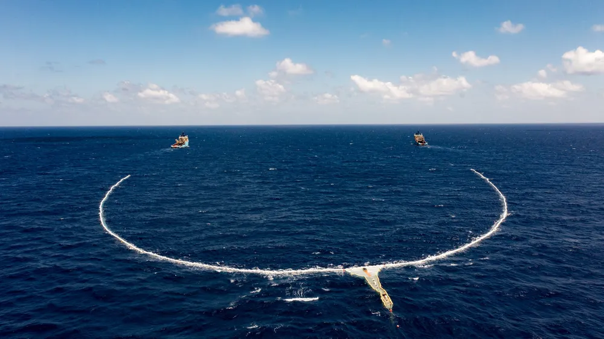
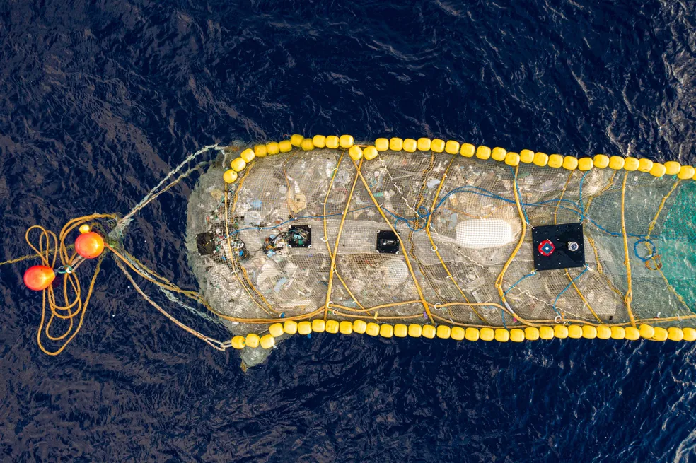
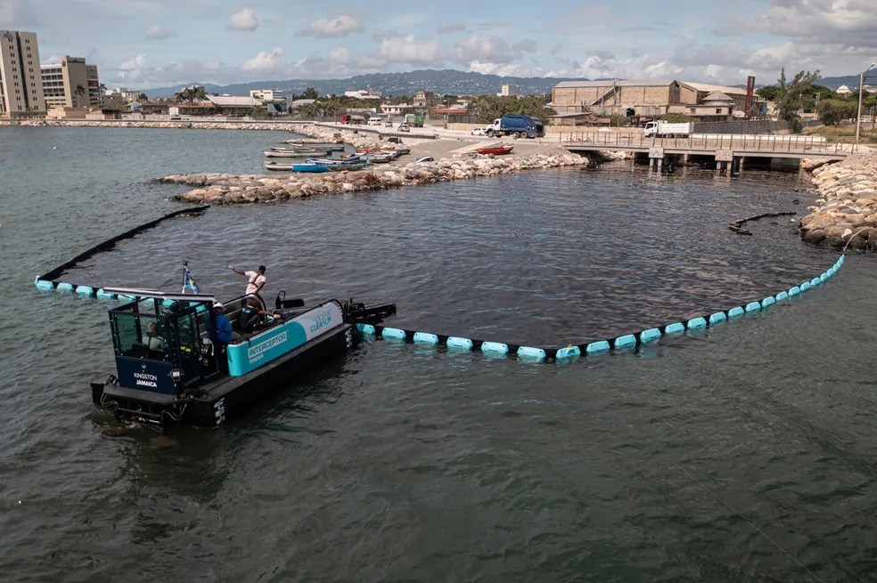
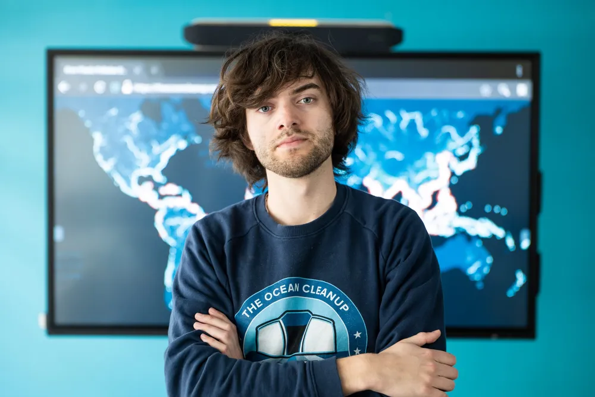

O holandês Boyan Slat tinha 16 anos quando, em uma viagem para fazer mergulho submarino na Grécia, encontrou mais sacolas plásticas do que peixes no mar. Da experiência ele tirou inspiração para criar um dispositivo que recolhe o lixo plástico do oceano.
Hoje com 30 anos, Boyan virou CEO da iniciativa The Ocean Cleanup, que garante ter meios para retirar 80% do plástico no mar até 2030, e cerca de 90% até 2040. A promessa consta em uma carta enviada pelo jovem à organização da Conferência do Oceano da Organização das Nações Unidas (ONU).
Com a criação, o ativista ganhou fama: em 2014 ele recebeu o título de “Campeão do Planeta” da ONU, o que lhe rendeu a aparição em diversas listas de jovens promissores, como a Forbes 30 Under 30 e a da revista Time. No site da iniciativa que ele comanda, há detalhes sobre o sistema de limpeza, mas também são vendidas camisetas e garrafas reutilizáveis com sua marca – Boyan virou quase uma celebridade.
O principal sistema criado por ele funciona como uma espécie de barragem móvel, que é levada por dois barcos. Esse coletor de lixo vai se enchendo conforme os barcos avançam a uma velocidade determinada, e conforme o plástico vai se movendo por conta das correntes marítimas (veja na imagem abaixo).
 Sistema de coleta de lixo plástico no oceano da iniciativa The Ocean Cleanup em testes no Oceano Pacífico em 2021 — Foto: Divulgação/The Ocean CleanupQuando fica cheia, essa espécie de rede é fechada, selada e levada até o barco, onde é descarregada. Depois que os navios que operam o sistema ficam cheios de plástico, o lixo é levado até um centro de reciclagem em terra firme.
Para encontrar os locais ideais para limpeza, a ONG utiliza modelos matemáticos que preveem em quais lugares do oceano o plástico tem mais chances de se acumular.
 Lixo plástico coletado pelo sistema de redes criado pelo holandês Boyan Slat, da The Ocean Cleanup — Foto: Divulgação/The Ocean CleanupAlém deste sistema de coleta no mar, a ONG comandada pelo holandês também desenvolveu um equipamento movido a energia solar para retirar o lixo dos rios antes mesmo que ele chegue até o oceano.
Chamados de "interceptores", esses equipamentos também funcionam criando barreiras para o lixo plástico. Atualmente, a ONG já tem dez dessas sistemas funcionando em rios de diferentes lugares do mundo, da Jamaica à Indonésia, passando por países como Malásia e República Dominicana.
 Equipamento da ONG The Ocean Cleanup em funcionamento na foz de um rio na Jamaica — Foto: Divulgação/The Ocean CleanupBoyan Slat tinha apenas 18 anos quando inventou, em 2013, o primeiro protótipo do sistema de limpeza dos mares. Logo depois, em 2014, ele recebeu um prêmio da ONU e começou a ganhar reconhecimento. Foi nessa época que ele passou a atrair investidores para o seu projeto, que atualmente incluem nomes como a banda Coldplay e a fabricante de refrigerantes The Coca-Cola Company.
 Boyan Slat, holandês criador da ONG The Ocean Cleanup — Foto: Divulgação/The Ocean CleanupApesar disso, as primeiras operações de limpeza começaram apenas em 2018, quando a The Ocean Cleanup testou o equipamento System 001. Depois, em 2019, uma evolução do mesmo sistema fez a primeira extração de plástico na região conhecida como a Grande Ilha de Lixo do Pacífico.
Desde então, o System 001 evoluiu para System 002 – conhecido também como Jenny – para realizar algumas operações de limpeza pontuais ao longo dos anos de 2021 e 2022.
Agora, o plano ambicioso da ONG é chegar a 10 sistemas em operação na região do Oceano Pacífico que mais concentra lixo plástico, e dobrar o número de equipamentos em funcionamento em rios a cada ano.
Agora, nos próximos 12 meses, vamos focar no amadurecimento das nossas soluções. São sistemas comprovados, eles funcionam, então é tudo uma questão de obter mais experiência. Queremos dobrar a quantidade de interceptores nos rios a cada ano, e também aumentar de um para dez sistemas em operação na grande mancha de lixo do Pacífico em 2 anos
Seus planos de expansão incluem o Brasil porque, segundo ele, o país é um dos que tem mais rios com potencial para a remoção do lixo plástico.
"Certamente há muito trabalho para ser feito no Brasil, e nós adoraríamos trabalhar com empresas locais e governos para tentar levar os interceptores para os rios do Brasil também", afirmou.
"É um bom investimento para os governos porque é muito mais caro limpar esse lixo na costa, depois que ele já afetou as praias e o turismo, do que simplesmente coletar enquanto ele ainda está nos rios", completou.
Esta reportagem foi produzida no âmbito da 2022 UN Ocean Conference Fellowship, organizada pela Earth Journalism Network da Internews com o apoio da Fundação Calouste Gulbenkian (Reino Unido).